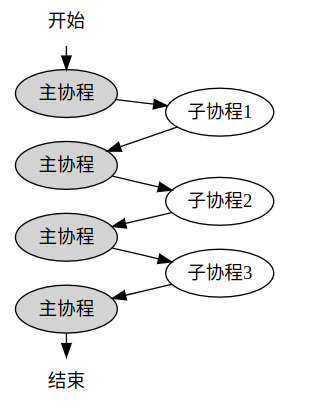

协程
协程和线程的区别
协程虽然被称为轻量级线程，但在单线程内，协程并不能并发执行，只能是一个协程结束或yield后，再执行另一个协程，而线程则是可以真正并发执行的。
其实这点也好理解，毕竟协程只是以一种花里胡哨的方式去运行一个函数，不管实现得如何巧妙，也不可能在单线程里做到同时运行两个函数，否则还要多线程有何用？
因为单线程下协程并不是并发执行，而是顺序执行的，所以不要在协程里使用线程级别的锁来做协程同步，比如pthread_mutex_t。如果一个协程在持有锁之后让出执行，那么同线程的其他任何协程一旦尝试再次持有这个锁，整个线程就锁死了，这和单线程环境下，连续两次对同一个锁进行加锁导致的死锁道理完全一样。
同样是单线程环境下，协程的yield和resume一定是同步进行的，一个协程的yield，必然对应另一个协程的resume，因为线程不可能没有执行主体。
并且，协程的yield和resume是完全由应用程序来控制的。与线程不同，线程创建之后，线程的运行和调度也是由操作系统自动完成的，但协程创建后，协程的运行和调度都要由应用程序来完成，就和调用函数一样，所以协程也被称为用户态线程。
- 所谓创建协程，其实就是把一个函数包装成一个协程对象，然后再用协程的方式把这个函数跑起来；所谓协程调度，其实就是创建一批的协程对象，然后再创建一个调度协程，通过调度协程把这些协程对象一个一个消化掉（协程可以在被调度时继续向调度器添加新的调度任务）；
- 所谓IO协程调度，其实就是在调度协程时，如果发现这个协程在等待IO就绪，那就先让这个协程让出执行权，等对应的IO就绪后再重新恢复这个协程的运行；
- 所谓定时器，就是给调度协程预设一个协程对象，等定时时间到了就恢复预设的协程对象。
// 上下文结构体定义
// 这个结构体是平台相关的，因为不同平台的寄存器不一样
// 下面列出的是所有平台都至少会包含的4个成员
typedef struct ucontext_t {
// 当前上下文结束后，下一个激活的上下文对象的指针，只在当前上下文是由makecontext创建时有效
struct ucontext_t *uc_link;
// 当前上下文的信号屏蔽掩码
sigset_t uc_sigmask;
// 当前上下文使用的栈内存空间，只在当前上下文是由makecontext创建时有效
stack_t uc_stack;
// 平台相关的上下文具体内容，包含寄存器的值
mcontext_t uc_mcontext;
...
} ucontext_t;
// 获取当前的上下文
int getcontext(ucontext_t *ucp);
// 恢复ucp指向的上下文，这个函数不会返回，而是会跳转到ucp上下文对应的函数中执行，相当于变相调用了函数
int setcontext(const ucontext_t *ucp);
// 修改由getcontext获取到的上下文指针ucp，将其与一个函数func进行绑定，支持指定func运行时的参数，
// 在调用makecontext之前，必须手动给ucp分配一段内存空间，存储在ucp->uc_stack中，这段内存空间将作为func函数运行时的栈空间，
// 同时也可以指定ucp->uc_link，表示函数运行结束后恢复uc_link指向的上下文，
// 如果不赋值uc_link，那func函数结束时必须调用setcontext或swapcontext以重新指定一个有效的上下文，否则程序就跑飞了
// makecontext执行完后，ucp就与函数func绑定了，调用setcontext或swapcontext激活ucp时，func就会被运行
void makecontext(ucontext_t *ucp, void (*func)(), int argc, ...);
// 恢复ucp指向的上下文，同时将当前的上下文存储到oucp中，
// 和setcontext一样，swapcontext也不会返回，而是会跳转到ucp上下文对应的函数中执行，相当于调用了函数
// swapcontext是sylar非对称协程实现的关键，线程主协程和子协程用这个接口进行上下文切换
int swapcontext(ucontext_t *oucp, const ucontext_t *ucp);sylar使用非对称协程模型，也就是子协程只能和线程主协程切换，而不能和另一个子协程切换，并且在程序结束时，一定要再切回主协程，以保证程序能正常结束。

sylar借助了线程局部变量的功能来实现协程模块。线程局部变量与全局变量类似，不同之处在于声明的线程局部变量在每个线程都独有一份，而全局变量是全部线程共享一份。
sylar使用线程局部变量（C++11 thread_local变量）来保存协程上下文对象，这点很好理解，因为协程是在线程里运行的，不同线程的协程相互不影响，每个线程都要独自处理当前线程的协程切换问题。
对于每个线程的协程上下文，sylar设计了两个线程局部变量来存储上下文信息（对应源码的t_fiber和t_thread_fiber），也就是说，一个线程在任何时候最多只能知道两个协程的上下文。又由于sylar只使用swapcontext来做协程切换，那就意味着，这两个线程局部变量必须至少有一个是用来保存线程主协程的上下文的，如果这两个线程局部变量存储的都是子协程的上下文，那么不管怎么调用swapcontext，都没法恢复主协程的上下文，也就意味着程序最终无法回到主协程去执行，程序也就跑飞了。
sylar协程模块实现
协程状态
enum State {
/// 初始化状态
INIT,
/// 暂停状态
HOLD,
/// 执行中状态
EXEC,
/// 结束状态
TERM,
/// 可执行状态
READY,
/// 异常状态
EXCEPT
};协程原语
对于非对称协程来说，协程除了创建语句外，只有两种操作，一种是resume(swapIn)，表示恢复协程运行，一种是yield(swapOut)，表示让出执行。协程的结束没有专门的操作，协程函数运行结束时协程即结束，协程结束时会自动调用一次yield以返回主协程。
协程类实现
sylar的协程通过Fiber类来表示，这个类包含以下成员变量：
/// 协程id
uint64_t m_id = 0;
/// 协程栈大小
uint32_t m_stacksize = 0;
/// 协程状态
State m_state = READY;
/// 协程上下文
ucontext_t m_ctx;
/// 协程栈地址
void *m_stack = nullptr;
/// 协程入口函数
std::function<void()> m_cb;Fiber的源码定义了两个全局静态变量，用于生成协程id和统计当前的协程数，如下：
/// 全局静态变量，用于生成协程id
static std::atomic<uint64_t> s_fiber_id{0};
/// 全局静态变量，用于统计当前的协程数
static std::atomic<uint64_t> s_fiber_count{0};然后是线程局部变量，对于每个线程，sylar设计了以下两个线程局部变量用于保存协程上下文信息：
/// 线程局部变量，每个线程独有一份，当前线程正在运行的协程
static thread_local Fiber *t_fiber = nullptr;
/// 线程局部变量，每个线程独有一份，当前线程的主协程，切换到这个协程，就相当于切换到了主协程中运行，智能指针形式
static thread_local Fiber::ptr t_threadFiber = nullptr;这两个线程局部变量保存的协程上下文对协程的实现至关重要，它们的用途如下：
t_fiber：保存当前正在运行的协程指针，必须时刻指向当前正在运行的协程对象。协程模块初始化时，t_fiber指向线程主协程对象。
t_thread_fiber：保存线程主协程指针，智能指针形式。协程模块初始化时，t_thread_fiber指向线程主协程对象。当子协程resume时，通过swapcontext将主协程的上下文保存到t_thread_fiber的ucontext_t成员中，同时激活子协程的ucontext_t上下文。当子协程yield时，从t_thread_fiber中取得主协程的上下文并恢复运行。
协程类Fiber的成员方法
首先是协程的构建函数。Fiber类提供了两个构造函数，带参数的构造函数用于构造子协程，初始化子协程的ucontext_t上下文协和栈空间，要求必须传入协程的入口函数，以及可选的协程栈大小。不带参的构造函数用于初始化当前线程的协程功能，构造线程主协程对象，以及对t_fiber和t_thread_fiber进行赋值。
这个构造函数被定义成私有方法，不允许在类外部调用，只能通过GetThis()方法，在返回当前正在运行的协程时，如果发现当前线程的主程未被初始化，那就用不带参的构造函数初始化线程主协程。
因为GetThis()兼具初始化主协程的功能，在使用协程之前必须显式调用一次GetThis()。
/**
* @brief 构造函数
* @attention 无参构造函数只用于创建线程的第一个协程，也就是线程主函数对应的协程，
* 这个协程只能由GetThis()方法调用，所以定义成私有方法
*/
Fiber::Fiber() {
m_state = EXEC;
// 设置当前正在运行的协程
SetThis(this);
if (getcontext(&m_ctx)) {
SYLAR_ASSERT2(false, "getcontext");
}
++s_fiber_count;
SYLAR_LOG_DEBUG(g_logger) << "Fiber::Fiber main";
}
/**
* @brief 构造函数，用于创建用户协程
* @param[] cb 协程入口函数
* @param[] stacksize 栈大小，默认为128k
*/
Fiber::Fiber(std::function<void()> cb, size_t stacksize)
: m_id(s_fiber_id++)
, m_cb(cb) {
++s_fiber_count;
m_stacksize = stacksize ? stacksize : g_fiber_stack_size->getValue();
m_stack = StackAllocator::Alloc(m_stacksize);
if (getcontext(&m_ctx)) {
SYLAR_ASSERT2(false, "getcontext");
}
m_ctx.uc_link = nullptr;
m_ctx.uc_stack.ss_sp = m_stack;
m_ctx.uc_stack.ss_size = m_stacksize;
makecontext(&m_ctx, &Fiber::MainFunc, 0);
SYLAR_LOG_DEBUG(g_logger) << "Fiber::Fiber() id = " << m_id;
}
/**
* @brief 返回当前线程正在执行的协程
* @details 如果当前线程还未创建协程，则创建线程的第一个协程，
* 且该协程为当前线程的主协程，其他协程都通过这个协程来调度，也就是说，其他协程
* 结束时,都要切回到主协程，由主协程重新选择新的协程进行resume
* @attention 线程如果要创建协程，那么应该首先执行一下Fiber::GetThis()操作，以初始化主函数协程
*/
Fiber::ptr GetThis(){
if (t_fiber) {
return t_fiber->shared_from_this();
}
Fiber::ptr main_fiber(new Fiber);
SYLAR_ASSERT(t_fiber == main_fiber.get());
t_thread_fiber = main_fiber;
return t_fiber->shared_from_this();
}接下来是协程原语的实现，也就是resume和yield
// 切换到当前协程执行
void Fiber::swapIn() {
SetThis(this);
SYLAR_ASSERT(m_state != EXEC);
m_state = EXEC;
// 取当前协程的主协程，自己swap自己，会死锁，所以建立了call
// 这里的GetMainFiber--->是指向run函数的那个fiber
if (swapcontext(&Scheduler::GetMainFiber()->m_ctx, &m_ctx)) {
SYLAR_ASSERT2(false, "swapcontext");
}
}
/**
* @brief 将当前线程切换到执行状态
* @pre 执行的为当前线程的主协程
*/
void Fiber::call() {
SetThis(this);
m_state = EXEC;
// 和swapIn 的区别-->线程中的主协程-->t_threadFiber
if (swapcontext(&t_threadFiber->m_ctx, &m_ctx)) {
SYLAR_ASSERT2(false, "swapcontext");
}
}
// 把当前协程切换到后台,调度协程换出来执行
void Fiber::swapOut() {
SetThis(Scheduler::GetMainFiber());
if (swapcontext(&m_ctx, &Scheduler::GetMainFiber()->m_ctx)) {
SYLAR_ASSERT2(false, "swapcontext");
}
}
/**
* @brief 将当前线程切换到后台
* @pre 执行的为该协程
* @post 返回到线程的主协程
*/
void Fiber::back() {
SetThis(t_threadFiber.get());
if (swapcontext(&m_ctx, &t_threadFiber->m_ctx)) {
SYLAR_ASSERT2(false, "swapcontext");
}
}在非对称协程里，执行swapIn时的当前执行环境一定是位于线程主协程里，所以这里的swapcontext操作的结果把主协程的上下文保存到t_thread_fiber->m_ctx中，并且激活子协程的上下文；而执行swapOut时，当前执行环境一定是位于子协程里，所以这里的swapcontext操作的结果是把子协程的上下文保存到协程自己的m_ctx中，同时从t_thread_fiber获得主协程的上下文并激活。
协程入口函数
// 线程的主协程(调度协程)不会进入到MainFunc中,
void Fiber::MainFunc() {
Fiber::ptr cur = GetThis(); // GetThis()的shared_from_this()方法让引用计数加1
SYLAR_ASSERT(cur);
try {
cur->m_cb(); // 这里真正执行协程的入口函数
cur->m_cb = nullptr;
cur->m_state = TERM;
} catch (std::exception& ex) {
cur->m_state = EXCEPT;
SYLAR_LOG_ERROR(g_logger) << "Fiber Except: " << ex.what()
<< " fiber_id=" << cur->getId()
<< std::endl
<< sylar::BacktraceToString();
} catch (...) {
cur->m_state = EXCEPT;
SYLAR_LOG_ERROR(g_logger) << "Fiber Except"
<< " fiber_id=" << cur->getId()
<< std::endl
<< sylar::BacktraceToString();
}
auto raw_ptr = cur.get(); // 手动让t_fiber的引用计数减1
cur.reset();
raw_ptr->swapOut(); // 协程结束时自动swapOut，以回到主协程(调度协程)
SYLAR_ASSERT2(false, "never reach fiber_id=" + std::to_string(raw_ptr->getId()));
}
void Fiber::CallerMainFunc() {
Fiber::ptr cur = GetThis(); // GetThis()的shared_from_this()方法让引用计数加1
SYLAR_ASSERT(cur);
try {
cur->m_cb();
cur->m_cb = nullptr;
cur->m_state = TERM;
} catch (std::exception &ex) {
cur->m_state = EXCEPT;
SYLAR_LOG_ERROR(g_logger) << "Fiber Except: " << ex.what() << " fiber_id=" << cur->getId()
<< std::endl
<< sylar::BacktraceToString();
} catch (...) {
cur->m_state = EXCEPT;
SYLAR_LOG_ERROR(g_logger) << "Fiber Except"
<< " fiber_id=" << cur->getId() << std::endl
<< sylar::BacktraceToString();
}
auto raw_ptr = cur.get(); // 手动让t_fiber的引用计数减1
cur.reset();
// 和MianFunc的区别
raw_ptr->back(); // 协程结束时自动swapOut，这里回到主线程(main)的主协程
SYLAR_ASSERT2(false, "never reach fiber_id=" + std::to_string(raw_ptr->getId()));
}协程的重置，重置协程就是重复利用已结束的协程，复用其栈空间，创建新协程，实现如下：
//重置协程函数，并重置状态
// INIT，TERM, EXCEPT,都可以进行重置
void Fiber::reset(std::function<void()> cb) {
SYLAR_ASSERT(m_stack);
SYLAR_ASSERT(m_state == TERM || m_state == EXCEPT || m_state == INIT);
m_cb = cb;
if (getcontext(&m_ctx)) {
SYLAR_ASSERT2(false, "getcontext");
}
m_ctx.uc_link = nullptr;
m_ctx.uc_stack.ss_sp = m_stack;
m_ctx.uc_stack.ss_size = m_stacksize;
makecontext(&m_ctx, &Fiber::MainFunc, 0);
m_state = INIT;
}其他实现细节
关于协程id。sylar通过全局静态变量s_fiber_id的自增来生成协程id，每创建一个新协程，s_fiber_id自增1，并作为新协程的id（实际是先取值，再自增1）。
关于线程主协程的构建。线程主协程代表线程入口函数或是main函数所在的协程，这两种函数都不是以协程的手段创建的，所以它们只有ucontext_t上下文，但没有入口函数，也没有分配栈空间。
关于协程切换。子协程的resume操作一定是在主协程里执行的，主协程的resume操作一定是在子协程里执行的，这点完美和swapcontext匹配，参考上面协程原语的实现。
关于智能指针的引用计数，由于t_fiber和t_thread_fiber一个是原始指针一个是智能指针，混用时要注意智能指针的引用计数问题，不恰当的混用可能导致协程对象已经运行结束，但未析构问题。关于协程对象的智能指针引用计数跟踪可参考test_fiber.cc。
参考：
https://www.midlane.top/wiki/pages/viewpage.action?pageId=10060957